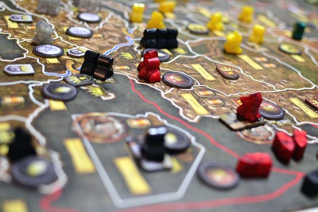
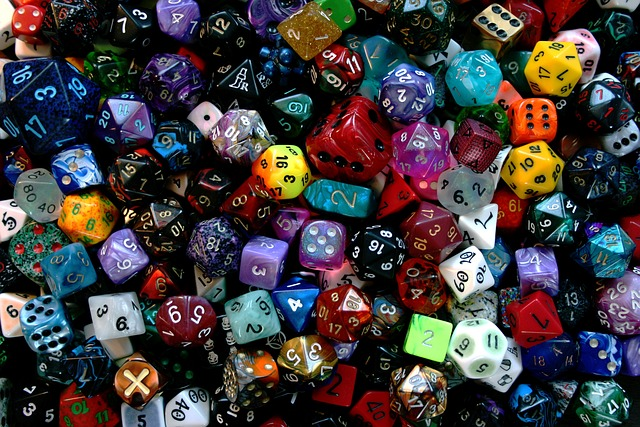

Hello! I'm software engineering student with a background in hands-on IT and customer service.

Skills

- Customer Service
- At Walgreens I worked in the photo department then was promoted to shift lead after moving to Kentucky.
- I was the go-to person for troubleshooting problems with hardware and software at both jobs.
- There were multiple times I was called to assist Pharmacy during stressful events.

- Documentation & Troubleshooting
- I am first in line to diagnose and troubleshoot problems big and small at work, something that knowledge of programmming has been very helpful with.
- I've created documentation of our network security set up for both internal and external use.
- I research new comapanies or software when we are deciding to switch what we use.
Off-Hours
 In my free time I enjoy dabbling with drawing of both paper and digital kind. I also enjoy swapping recipes with my friends, the occasional get together for board games of various types, and video games. Currently I am learning to play the piano as well. I generally enjoy many of my hobbies (video games and drawing) while watching documentaries or youtube channels like Technology Connections
or Kurzgesagt.
In my free time I enjoy dabbling with drawing of both paper and digital kind. I also enjoy swapping recipes with my friends, the occasional get together for board games of various types, and video games. Currently I am learning to play the piano as well. I generally enjoy many of my hobbies (video games and drawing) while watching documentaries or youtube channels like Technology Connections
or Kurzgesagt.


Sorry! This section of the website isn't working yet!